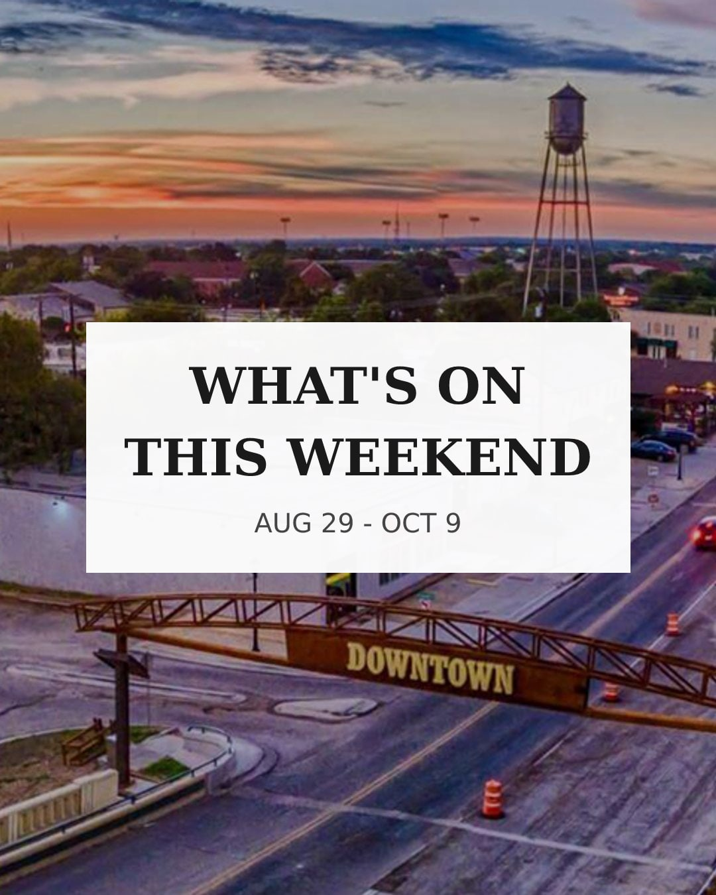
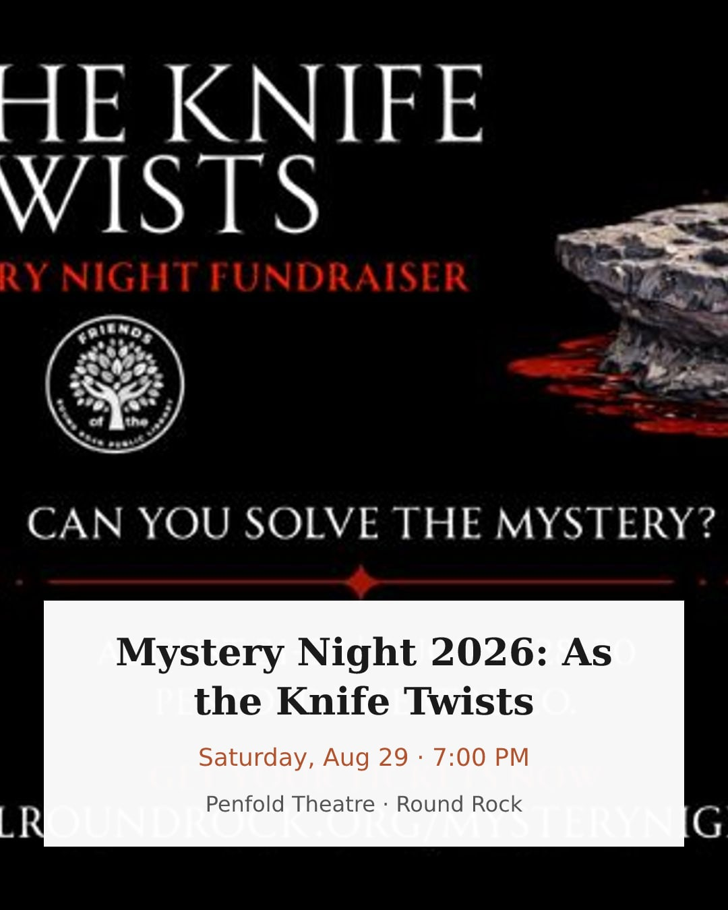
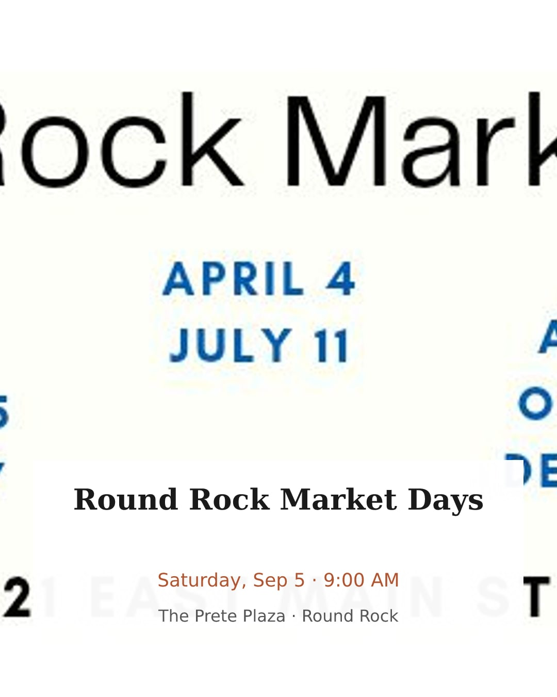
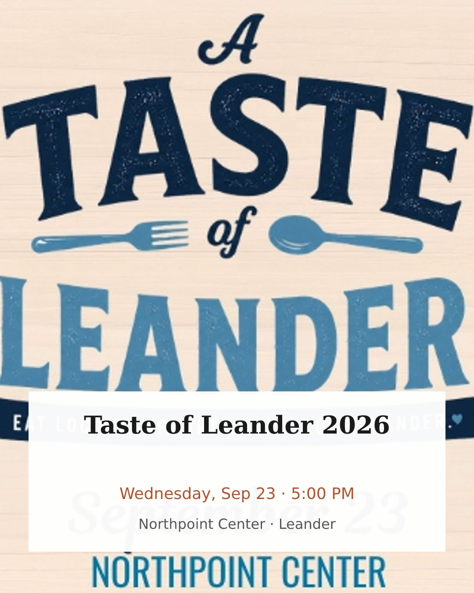
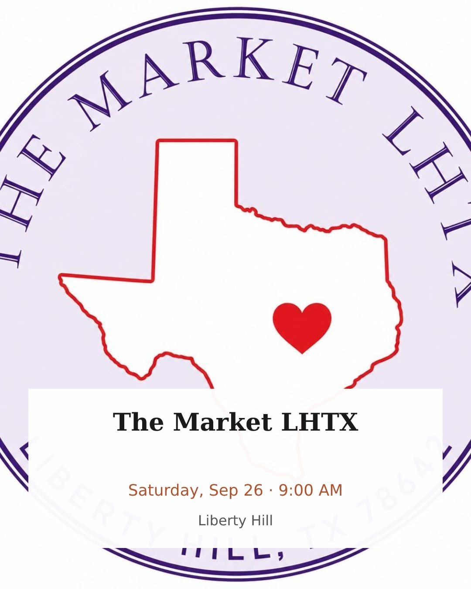
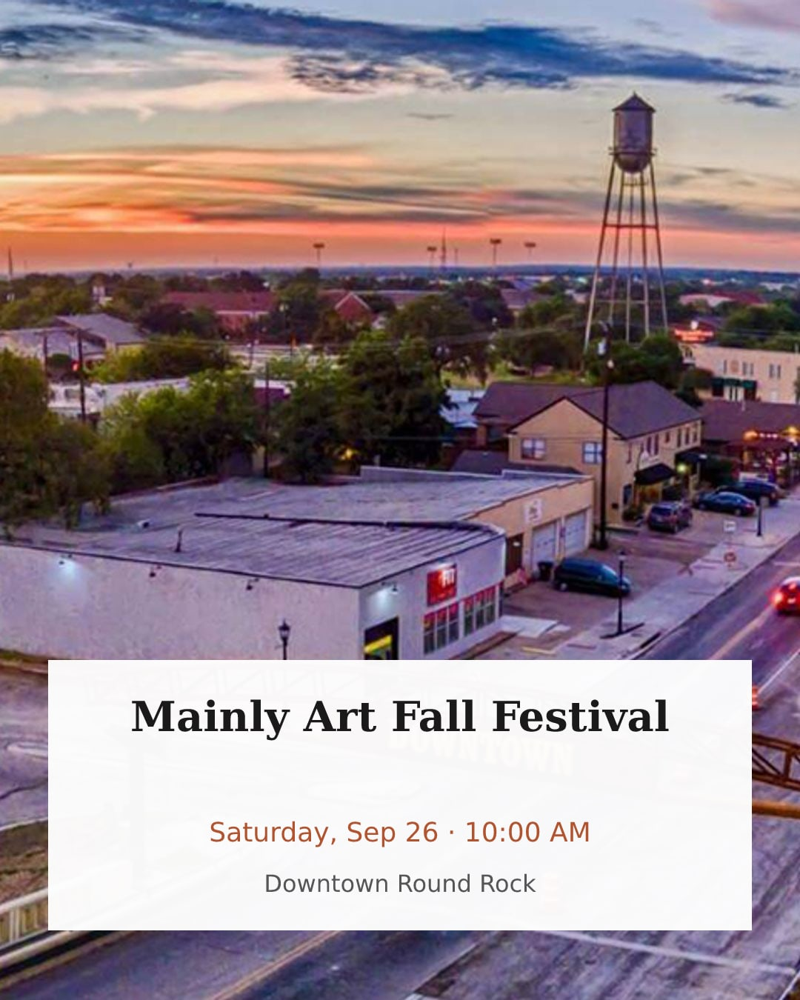
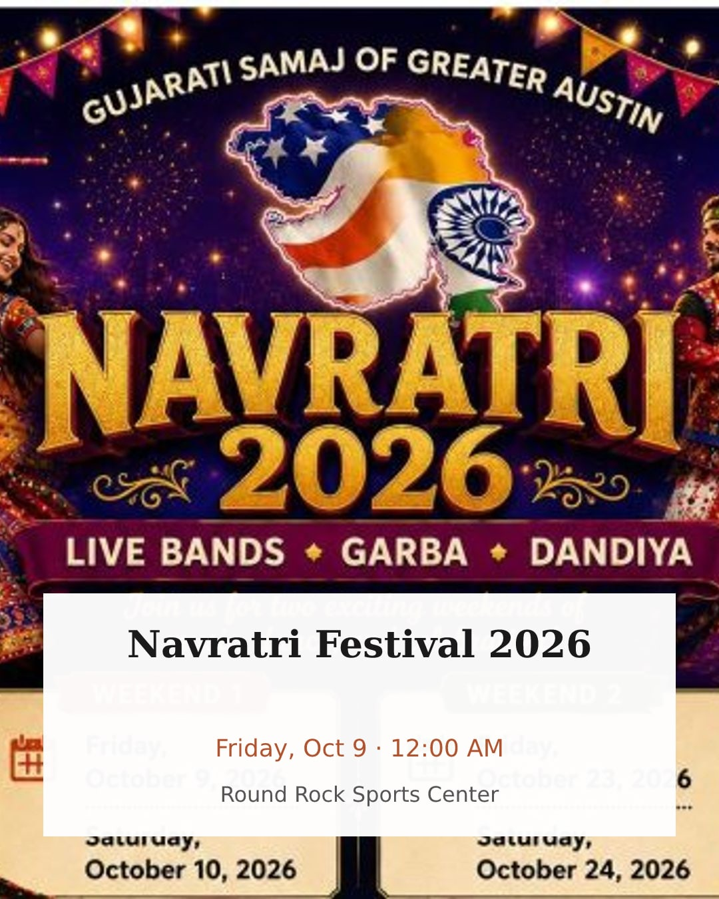
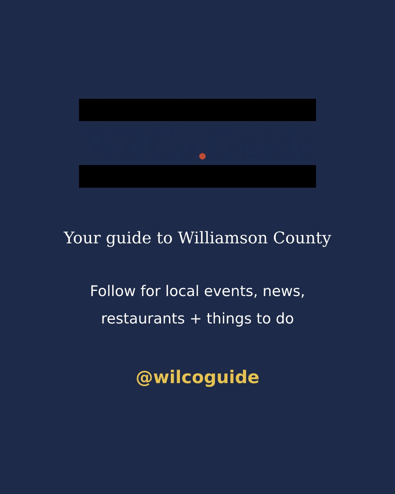
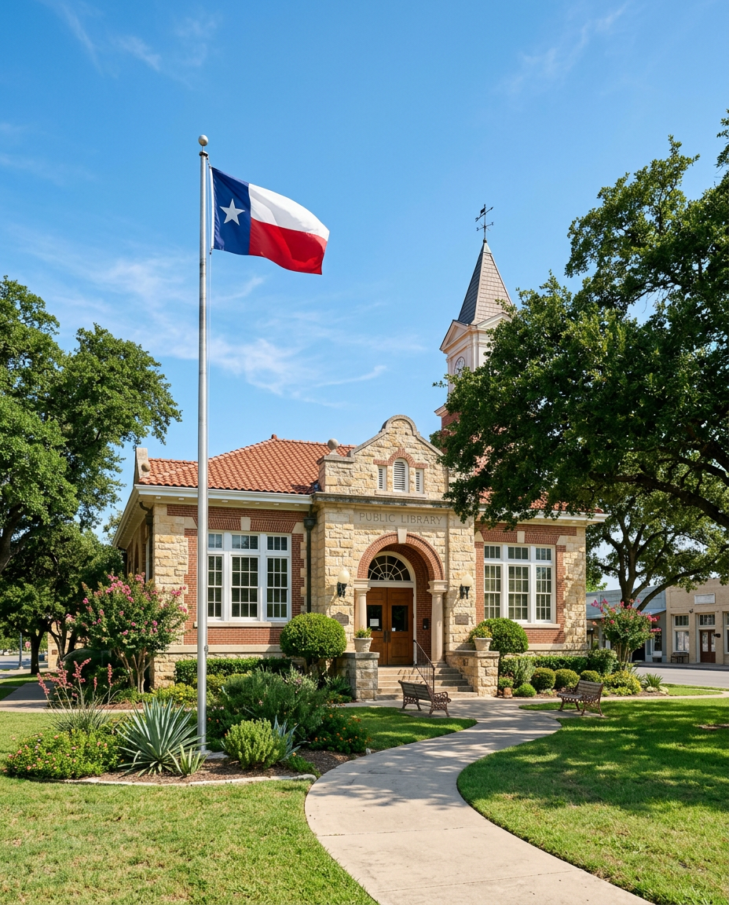
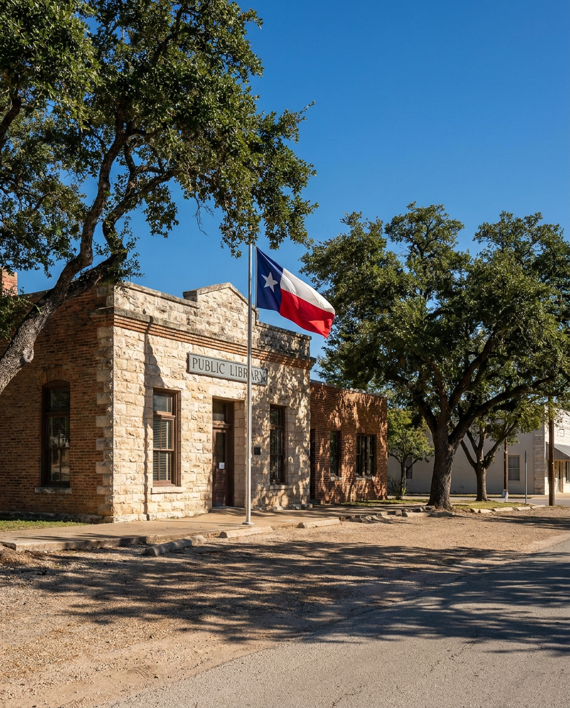

Day-1 validation, 2026-08-28. Every slide below was rendered by the EXISTING production compositor at 1080×1350 (Instagram portrait) with REAL upcoming events pulled from the prod database. No new engine code — just an inline template in the "photo + white text box" style. This is a direction check, not the final design.

1 — Hook. Real Round Rock aerial photo from the event feed. This is the whatsongoldy-style direction.

2 — Mystery Night 2026. Penfold Theatre, Round Rock. Source image is the organizer's header graphic.

3 — Round Rock Market Days.Source image is a promo poster — text-on-text. This is why the image picker + AI images matter.

4 — Taste of Leander 2026.Also a poster. Same lesson.

5 — The Market LHTX. Organizer cover photo.

6 — Mainly Art Fall Festival. Real downtown Round Rock photo — this is what a good slide looks like with a real photo behind it.

7 — Navratri Festival 2026. Round Rock Sports Center.

8 — Closing CTA.Two known bugs on display: the compositor flattens the logo's transparency to black bars, and the navy wordmark is invisible on navy. Logged for Phase 1. Your Canva closing card replaces this slide anyway.
AI Image Test (V3)
Same prompt to three models via OpenRouter: "photorealistic small-town Texas public library, no people, no text." This is the fallback lane for civic events (which have zero real photos) and news. Costs and speeds measured live.

Gemini 3.1 Flash Image — $0.067/image, 10 seconds. My pick for the default events/civic model.

Gemini 3 Pro Image — $0.139/image, 20 seconds. Note the sign says "PUBLIC LIBRARX" — image models still fumble baked-in text, which is fine for us because our system stamps all text itself.GPT-5.4 Image 2 — $0.182/image, 121 seconds. Too slow for an interactive re-roll loop.